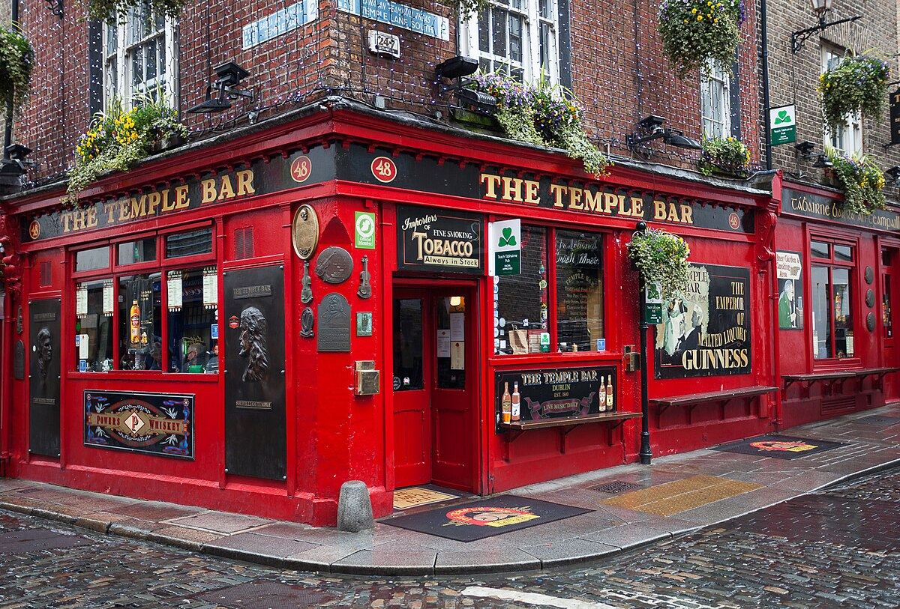
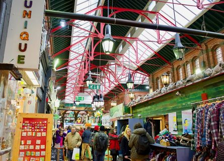
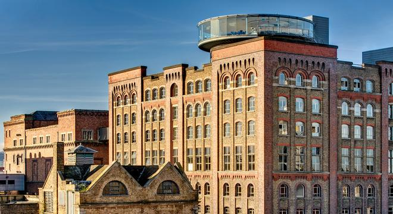

Dublin Pubs
What to Know and What to Expect
The best way to experience Dublin is in an Irish pub. Whether you enjoy live music and a solid pint or prefer the coziness of some warm banter, there's a Dublin pub for you. Whether it's a tourist trap like The Temple Bar or a less-trafficked place like The Brazen Head (the oldest pub in all of Ireland), each Dublin pub has a little history behind it.
As you drink, you should also down a pint of Irish Guinness. Guinness is known for being fresh and creamy in Dublin's local pubs, and if you want a more stout-filled experience, visit the Guinness Storehouse, where you can learn how they brew the black stuff before enjoying a rooftop pint. Food is also served in most Dublin pubs, from Irish stew to seafood chowder and gastropub options. You can sip your beer with coddle or enjoy fish and chips in a pint-sized cup. Also, many pubs have live shows with local folk, trad, and acoustic musicians performing nightly, so don't be afraid to sit back and enjoy the show. For a local pub experience with many tourists, check out O'Gogarty's in Temple Bar or Whelan's for some real Irish tunes.

